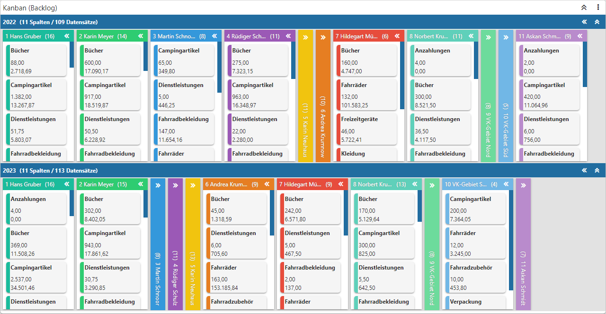
Mit Hilfe des Widgets "Kanban" wird das Datenmaterial in Form einer Steuerungsanzeige dargestellt, welche die Daten in Gruppen, Spalten und Kacheln aufbereitet. D.h. das Datenmaterial kann mehrdimensional betrachtet werden, wobei ein auf- und zuklappen der Daten möglich ist.
Einstellungen
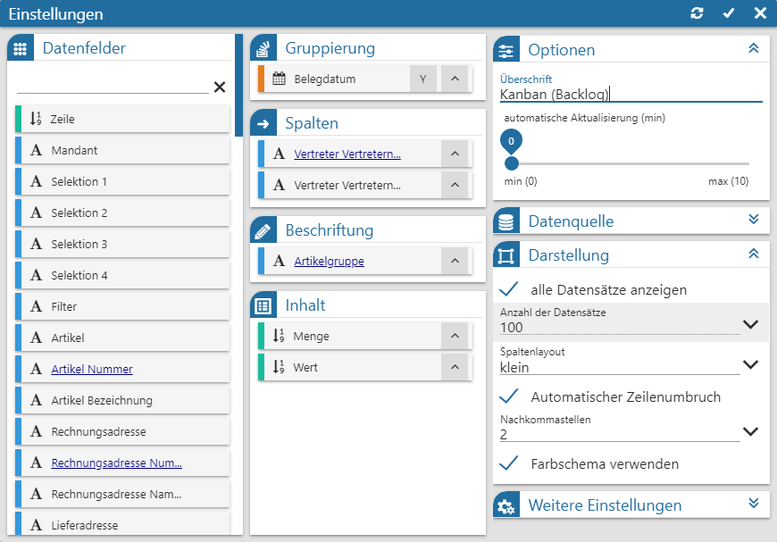
Folgende Eingabefelder, Einstellungen und Informationen stehen zur Verfügung:
Datenfelder
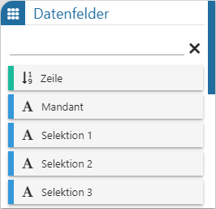
Ø Tabelle "Datenfelder"
In dieser Tabelle werden alle Felder der Datenquelle dargestellt, welche per Drag & Drop in die Tabellen "Gruppierung", "Spalten", "Beschriftung" und "Inhalt" übergeben werden können. Der Power Report unterscheidet hierbei nach den folgenden Datentypen:
ü - Alphanumerisch
Es handelt sich um ein
Feld mit alphanumerischen Inhalt.
ü - Text
Es handelt sich um ein Feld mit
Langtext.
ü - Bild (Grafik)
Es handelt sind um ein
Feld mit einem Bild als Inhalt. Zur besseren Darstellung wird anstatt der Grafik
der Name des Bilds im Widget angezeigt.
ü - Datum
Es handelt sich um ein Feld des
Typs "Datum", wobei das Darstellungsformat selber bestimmt werden darf. Hierfür
muss nur das Symbol neben der
Beschreibung des Felds angeklickt werden, wodurch sich die folgende Auswahl
öffnet:
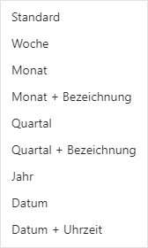
ü - Zahl (Measure)
Es handelt sich um ein
Feld mit numerischen Inhalt.
Hinweis
Mit Hilfe der Suchzeile kann über eine Volltextsuche nach Datenfeldern gesucht werden, wobei das %-Zeichen als Platzhalter verwendet werden kann.
Gruppierung
Ø Tabelle "Gruppierung"
Mit Hilfe der Tabelle "Gruppierung" werden abhängig vom Inhalt des Datenfelds eigenständige Bereiche (Gruppen) gebildet. Durch Anwahl des Symbols können diese Gruppen auf- oder absteigend sortiert werden.
Hinweis
Sollten an dieser Stelle kein Datenfeld hinterlegt werden, so wird automatisch die Gruppen "Standard Gruppe" im Kanban dargestellt.
Spalten
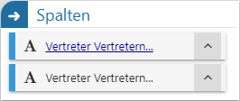
Ø Tabelle "Spalten"
In dieser Tabelle wird jenes Feld zugewiesen, welches die Spalten in den Gruppen bildet. Durch Anwahl des Symbols kann der Inhalt der Spalten auf- oder absteigend sortiert werden.
Beschriftung
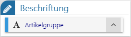
Ø Tabelle "Beschriftung"
Mit dem hier abgelegten Datenfeld wird die Überschrift der einzelnen Kacheln gebildet. Durch Anwahl des Symbols kann der Inhalt der Beschriftung auf- oder absteigend sortiert werden.
Inhalt
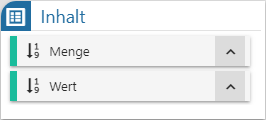
Ø Tabelle "Inhalt"
In dieser Tabelle werden jene Felder hinterlegt, welche pro Kachel des Kanbans dargestellt werden sollen. Durch Anwahl des Symbols kann der Inhalt auf- oder absteigend sortiert werden.
Optionen
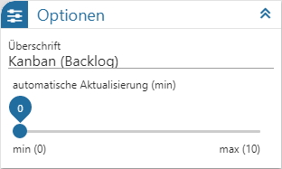
Ø Überschrift
An dieser Stelle wird die Bezeichnung des Kanbans definiert.
Ø automatische Aktualisierung (min)
An dieser Stelle kann definiert werden, ob sich der Inhalt der Tabelle automatisch aktualisieren soll. Mit der Einstellung "0" findet keine Aktualisierung statt.
Datenquelle
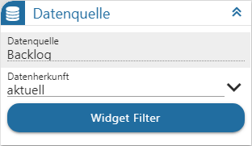
Ø Datenquelle
Dieses Informationsfeld zeigt den Namen der zu Grunde liegenden Datenquelle an.
Ø Datenherkunft
An dieser Stelle kann mit Hilfe einer Auswahlliste definiert werden, aus welchem Bereich der Datenquelle die Daten des Widgets stammen sollen. Die Auswahl "aktuell" steht immer zur Verfügung und spiegelt die im Ausgangsfenster gewählte Datenquelle (temporäre Datenquelle, Snapshot, View oder MasterView) wieder.
Hinweis
Gibt es für die Datenquelle mehrere Snapshots, so sind diese über den Eintrag "xxx (statisch)" (xxx => Name der Auswertung) zusammengefasst. Innerhalb der Snapshots erfolgt die weitere Selektion über den Widget Filter.
Ø Widget Filter
Durch Anwahl dieses Buttons wird das Fenster Widget Filter geöffnet. In diesem kann die genutzte Datenquelle nach frei definierbaren Kriterien eingeschränkt werden.
Hinweis
Handelt es sich nicht um eine importiere Datenquelle, so werden die folgenden Selektionskriterien automatisch vorgegeben, wobei ein Editieren selbstverständlich möglich ist:
ü Mandant
Es wird durch die
Filterzeile "Mandant = aktuell" automatisch auf die Daten des aktuellen Mandaten
eingegrenzt.
ü Selektion 1 bis 4 / Filter
Es
wird automatisch auf die Daten jenes Snapshots eingegrenzt, über welchen der
Power Report ausgegeben wurde. Die Filterzeilen hierzu lauten "Selektion X =
aktuell" bzw. "Filter = aktuell".
Hinweis
Mit Hilfe des Widgets Datenquellen Info ist jederzeit nachvollziehbar, was sich gerade hinter "aktuell" verbirgt (Einstellung "Aktuelle Sel.").
Darstellung
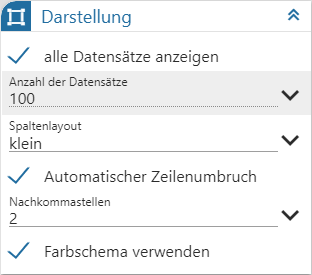
Ø alle Datensätze anzeigen
Durch Aktivierung dieser Option werden alle Datensätze der Datenquelle im Kanban angezeigt.
Ø Anzahl der Datensätze
Wurde die Option "alle Datensätze anzeigen" nicht aktiviert, so kann an dieser Stelle die Anzahl der maximalen Einträge im Kanban hinterlegt werden.
Ø Spaltenlayout
An dieser Stelle kann die Breite der Spalten des Kanbans definiert werden.
Ø Automatischer Zeilenumbruch
Durch Aktivierung dieser Option werden Texte innerhalb der Kachel umgebrochen.
Ø Nachkommastellen
Aus einer Auswahlliste kann die Anzahl der Nachkommastellen für die Anzeige innerhalb des Kanbans definiert werden.
Ø Farbschema verwenden
Durch Aktivierung der Option "Farbschema verwenden" erhält jede Spalte eine individuelle Farbgebung. Dadurch kann der Inhalt unterschiedlicher Gruppierung noch schneller miteinander verglichen bzw. überprüft werden.
Weitere Einstellungen
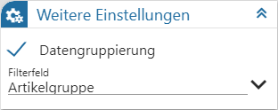
Ø Datengruppierung
Mit Hilfe dieser Option werden die Daten der Datenquelle komprimiert, d.h. es findet eine Zusammenfassung von gleichlautenden Daten statt. Die Gruppierung erfolgt hierbei über jene Datenfelder, welche in den Tabellen "Gruppierung", "Spalten", "Beschriftung" und "Inhalt" hinterlegt wurden.
Hinweis
Bei einer Datengruppierung werden Zahlenfelder automatisch summiert.
Ø Filterfeld
Wenn bei einem Mausklick auf eine Kachelüberschrift ein Quickfilter ausgelöst werden soll, so muss an dieser Stelle jenes Feld, nach welchem gefiltert werden soll, angegeben werden. Die Einstellung "Standard" steht immer zur Verfügung und beinhaltet eine automatische Filterung auf das Datenfeld der Gruppierung, der Spalte und der Beschriftung (es wird ein UND-Filter gebildet).
Ø Editieren (nur bei Stammdaten-Kanban)
Wenn ein Drag & Drop-Feld in die Tabelle "Spalte" gelegt wird, steht die Option "Editieren" zur Verfügung. Durch Aktivierung wird das Drag & Drop innerhalb des Kanbans freigeschaltet, d.h. es können über diesen Weg Stammdatenänderungen getätigt werden.
Hinweis
Ein Editieren ist nicht möglich, wenn die Datengruppierung aktiviert wurde.
Buttons
Ø Aktualisierung
Mit Hilfe dieses Buttons werden die Einstellungen gespeichert, direkt angewendet und das Einstellungsfenster bleibt geöffnet.
Ø Ok
Durch Anwahl des Buttons "Ok" werden die Änderungen angewendet und das Fenster geschlossen.
Ø Ende
Durch Anwahl des Buttons "Ende" wird das Einstellungsfenster geschlossen und nicht gespeicherte Änderungen verworfen.